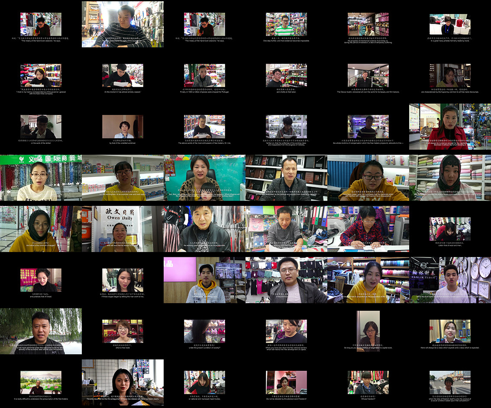
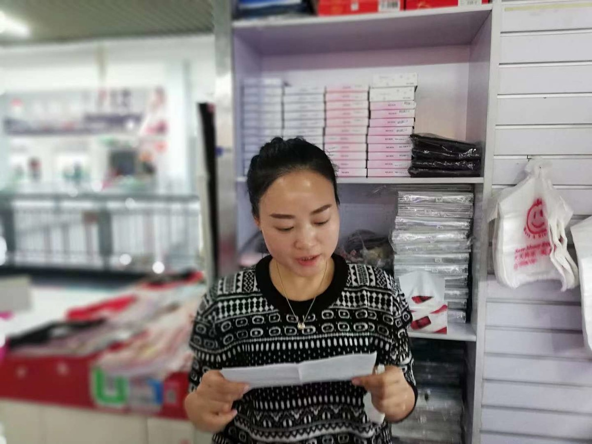
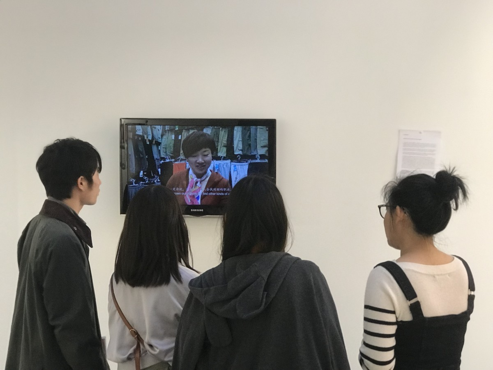
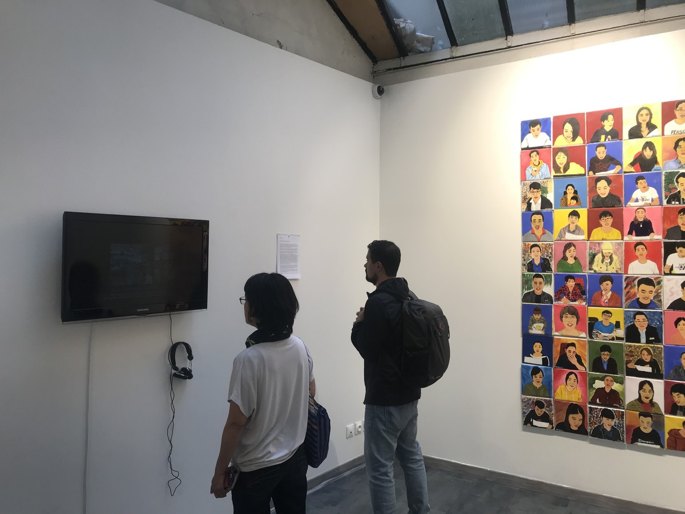

Home
Works
Curatorial & Public
Writing & Research
Bio & CV
sHI Wanwan
Artist
Home
Works
Curatorial & Public
Writing & Research
Bio & CV
关于自由贸易的演讲

彩色单屏幕录像，双声道可变尺寸，14分钟，可变尺寸，2018
2018年10月，艺术家邀请了116名义乌国际商贸市场里的生意人，一起朗诵了马克思在1848年发表的关于“自由贸易”的演讲稿（选段），并用录像记录下来。
义乌国际商贸城营业面积400万平方米，7万个商位，从业人员20万。众多中国制造商品通过义乌国际商贸城走向非洲、中东、南亚、东欧等地区。2005年被联合国、世界银行和摩根士丹利评为“全球最大的小商品批发市场”。

作品拍摄现场，义乌国际贸易城，义乌

AMAC Works当代艺术中心，巴黎

AMAC Works当代艺术中心，巴黎